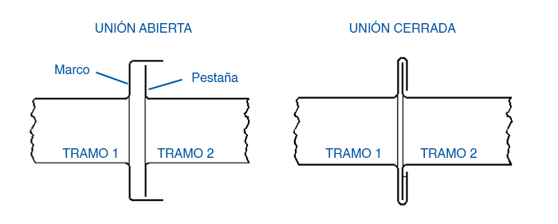
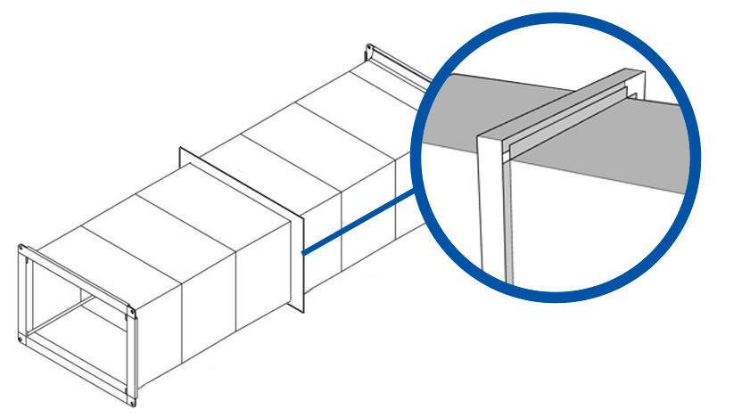

Engrame firme
con cierre estable y buena respuesta en obra

Sistema de unión
Unión Marco-Pestaña para montajes de confort con firmeza y practicidad.
Ideal para sistemas de confort y ventilación mecánica, este sistema asegura un engrame firme y duradero, con una relación muy equilibrada entre facilidad de montaje, hermeticidad y costo de ejecución.
Montaje práctico
muy utilizado en obras de confort y ventilación
Sellado recomendado
conviene sumar sellador entre marcos para minimizar fugas
Aplicación habitual
Un sistema muy elegido cuando se busca una buena terminación con montaje eficiente.
La Unión Marco-Pestaña es una alternativa muy utilizada en instalaciones de confort, ventilación mecánica y obras donde la velocidad de armado, la prolijidad y la durabilidad deben convivir en equilibrio.

Qué muestra el sistema
El detalle refleja el encastre característico entre marco y pestaña, una configuración que brinda buen apoyo, montaje cómodo y una resolución muy utilizada cuando el objetivo es combinar practicidad con una hermeticidad cuidada.
Guía de elección
Claves para usarlo bien
Es una opción muy equilibrada para confort y ventilación mecánica, especialmente cuando se busca una buena terminación con montaje práctico.
- Funciona muy bien en sistemas de confort y ventilación mecánica.
- Entrega un montaje firme, durable y de buena terminación visual.
- Conviene utilizar sellador entre marcos para minimizar posibilidades de fuga.
- Es una alternativa muy equilibrada entre facilidad de montaje y costo.
Dónde se luce mejor
En redes de aire acondicionado, ventilación general y sistemas de confort donde importan la prolijidad y la velocidad de ejecución.
Ventaja operativa
Permite resolver la obra con una secuencia amigable para el instalador, sin resignar firmeza entre tramos.
Qué conviene controlar
El ajuste entre marcos, la calidad de fabricación y el sellado complementario cuando la exigencia lo requiere.
Sistema y detalle
Sumamos la vista general, el esquema en corte y una referencia extra del sistema montado.
Esta unión no solo se entiende mejor desde su dibujo general: también conviene ver el corte y la imagen complementaria del sistema para interpretar mejor su engrame y su forma de trabajo.
Vista general
Configuración de marco y pestaña
El esquema completo permite leer la geometría del sistema y su equilibrio entre facilidad de montaje, firmeza y buena terminación.

Sistema en corte
Lectura del engrame
El corte ayuda a entender la lógica del cierre entre marcos y por qué conviene sumar sellador cuando se quiere minimizar la posibilidad de fuga.

Detalle visual
Referencia complementaria del sistema
Esta imagen extra completa la lectura del conjunto y acompaña la explicación del sistema tal como aparece en la web actual de HVAC PROF.
Siguiente paso
Si buscás un sistema práctico para confort y ventilación, podemos ayudarte a definir medidas y montaje.
Recibimos planos, despieces y consultas técnicas para evaluar el sistema de unión más conveniente según la obra, el recorrido y la terminación requerida.